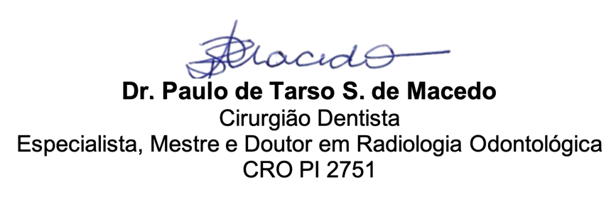

Achados Radiográficos
Clique individualmente nos achados para visualizar detalhadamente na imagem radiográfica.
Carregando achados...
👁️ Ver Todos na Imagem
⟲ Resetar Visualização

Radiologista Responsável, DDS, PhD